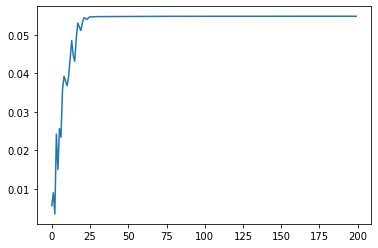
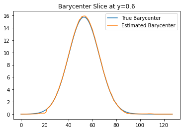

Simple Barycenter Computation#
[1]:
from mmot import MMOTSolver
import numpy as np
import matplotlib.pyplot as plt
import itertools
[2]:
# Grid of size n1 x n2
n1 = 128 # x axis
n2 = 128 # y axis
x, y = np.meshgrid(np.linspace(0.5/n1,1-0.5/n1,n1), np.linspace(0.5/n2,1-0.5/n1,n2))
r = 0.125
positions = np.array([[0.25,0.25],
[ 0.75,0.75],
[0.25,0.75]])
# measures = [None]*len(positions)
measures = [None]*(len(positions))
for i in range(len(positions)):
xc,yc = positions[i]
measures[i] = np.zeros((n2, n1))
measures[i] = np.exp(-0.5*((x-xc)**2 + (y-yc)**2)*100.0)
measures[i][measures[i]<1e-4] = 0.0
measures[i] *= n1*n2 / np.sum(measures[i])
fig, ax = plt.subplots(1, len(measures), figsize=(12,4))
for i in range(len(measures)):
ax[i].imshow(measures[i], origin='lower', extent=(0,1,0,1))
ax[i].set_title("$\\mu_{{ {:0d} }}$".format(i))
[3]:
unroll_node = 0
# The set A that defines the pairwise costs
edge_list = [[0,1], [1,2], [0,2]]
bary_weights = np.array([1.0,1.0,1.0])
bary_weights /= np.sum(bary_weights)
prob = MMOTSolver(measures, edge_list, x, y, unroll_node, bary_weights)
prob.Visualize('original', filename='CostGraph.svg')
[4]:
dual_vars = [np.zeros(x.shape) for i in range(prob.NumDual())]
num_its = 200
step_size = 0.25
root_node = 0
costs = np.nan*np.zeros(num_its)
ftol = 0.0
gtol = 0.0
root_nodes = np.arange(prob.NumDual())
root_cycler = itertools.cycle(root_nodes)
print('Iteration, StepSize, Cost, Error')
for i in range(num_its):
error = prob.Step(next(root_cycler), dual_vars, step_size)
costs[i] = prob.ComputeCost(dual_vars)
if(i>0):
step_size = prob.StepSizeUpdate(step_size, costs[i], costs[i-1], error)
if((i%10)==0):
print('{:9d}, {:0.4f}, {:0.4f}, {:0.5f}'.format(i,step_size, costs[i], error))
# Check for convergence in cost
if(np.abs(costs[i]-costs[i-1])<ftol):
break
# Check for convergence via gradient
if(error<gtol):
break
plt.figure()
plt.plot(costs)
plt.show()
Iteration, StepSize, Cost, Error
0, 0.2500, 0.0057, 1.99919
10, 0.0593, 0.0368, 0.81437
20, 0.0188, 0.0531, 0.26774
30, 0.0106, 0.0547, 0.00155
40, 0.0079, 0.0547, 0.00048
50, 0.0106, 0.0547, 0.00030
60, 0.0106, 0.0548, 0.00014
70, 0.0079, 0.0548, 0.00008
80, 0.0106, 0.0548, 0.00010
90, 0.0106, 0.0548, 0.00004
100, 0.0059, 0.0548, 0.00014
110, 0.0059, 0.0548, 0.00003
120, 0.0059, 0.0548, 0.00003
130, 0.0059, 0.0548, 0.00002
140, 0.0059, 0.0548, 0.00003
150, 0.0059, 0.0548, 0.00002
160, 0.0059, 0.0548, 0.00002
170, 0.0059, 0.0548, 0.00001
180, 0.0059, 0.0548, 0.00002
190, 0.0059, 0.0548, 0.00001

[5]:
weights = np.ones(len(measures))/len(measures)
bary = prob.Barycenter(dual_vars)
[6]:
vmax = np.max(measures[0])
fig, axs = plt.subplots(1, len(measures)+2, figsize=(12,4))
for i in range(len(measures)):
axs[i].imshow(measures[i], origin='lower', extent=(0,1,0,1))#, vmin=0, vmax=vmax)
axs[i].set_title("$\\mu_{{ {:0d} }}$".format(i))
axs[-2].imshow(bary, origin='lower', extent=(0,1,0,1))#, vmin=0, vmax=vmax)
axs[-2].set_title('Estimated Barycenter')
true_loc = np.mean(positions,axis=0)
true_bary = np.zeros((n2, n1))
true_bary = np.exp(-0.5*((x-true_loc[0])**2 + (y-true_loc[1])**2)*100.0)
true_bary *= n1*n2 / np.sum(true_bary)
#true_bary[(x-true_loc[0])**2 + (y-true_loc[1])**2 < r**2] = 1
#true_bary *= n1*n2 / np.sum(true_bary)
axs[-1].imshow(true_bary, origin='lower', extent=(0,1,0,1))#, vmin=0, vmax=vmax)
axs[-1].set_title('True Barycenter')
[6]:
Text(0.5, 1.0, 'True Barycenter')
[7]:
plt.plot(true_bary[int(0.6*n1),:],label='True Barycenter')
plt.plot(bary[int(0.6*n1),:],label='Estimated Barycenter')
plt.title('Barycenter Slice at y=0.6')
plt.legend()
[7]:
<matplotlib.legend.Legend at 0x16ccd3160>

[ ]:
[ ]: